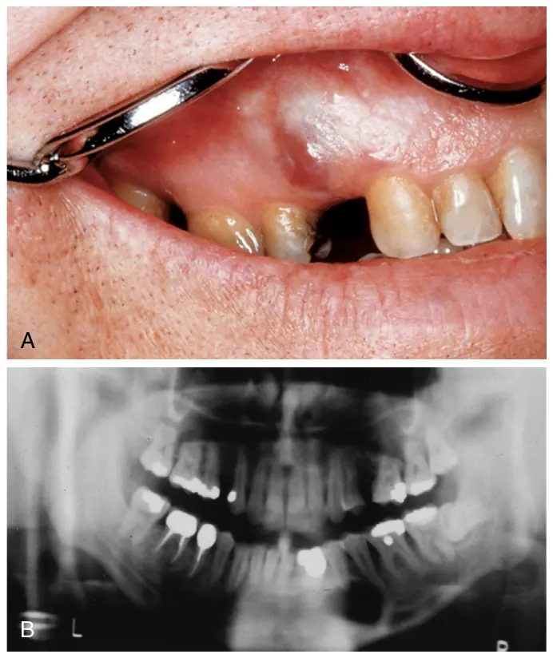
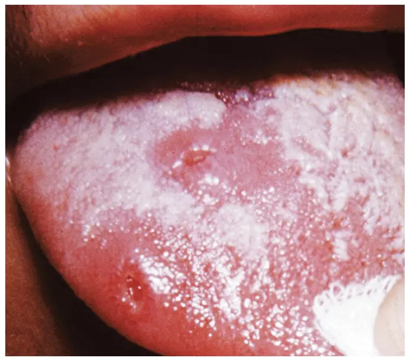

نسخه استخراجشده؛ ترجمه یا تأیید علمی انجام نشده است. وضعیت: captured
مرد ۲۴ سالهای برای ترمیم آمده است. در معاینهی گردن چند غدهی لنفاوی سفت، لاستیکی و بدون درد در یک طرف لمس میکنی. میگوید سه هفته است آنها را دارد و شبها خیس عرق میشود. دندان عفونی ندارد. قدم بعدی چیست؟

لنفوم سرطان بافتهای لنفاوی است و معمولاً به شکل غدهی بزرگ یا توده دیده میشود. نخستین نشانهاش ممکن است در سر و گردن یا دهان باشد.
علائم B: تب، تعریق شبانه و کاهش وزن بیش از ۱۰٪؛ نشانهی سیر مهاجمتر. بیمار سندرم شوگرن و بیمار دچار نقص ایمنی خطر بیشتری برای لنفوم دارند.
غدهی بدون دردی که بیش از ۲ هفته مانده، یا غدهی سوپراکلاویکولار بدون درد، مشکوک به بدخیمی است. برای بیوپسی ارجاع بده؛ آنتیبیوتیک دادن و صبر کردن جایش را نمیگیرد.
شمار طبیعی گلبول سفید بزرگسال ۴۵۰۰ تا ۱۱٬۰۰۰ در میکرولیتر است و ۵۰ تا ۷۰٪ آن نوتروفیل. کمتر از ۴۵۰۰ را لکوپنی میگویند. نوتروفیل خط اول دفاع در برابر باکتری است.

هرپس در این بیماران بزرگتر است و دیرتر خوب میشود. بیمار HSV مثبت در دورهی شیمیدرمانی آسیکلوویر پیشگیرانه میگیرد.